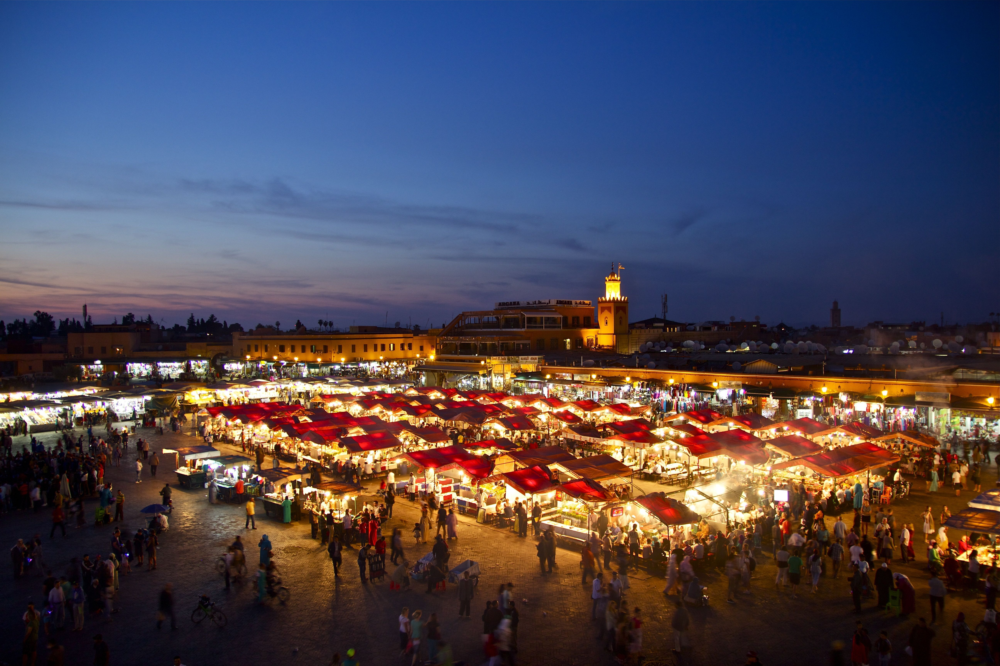
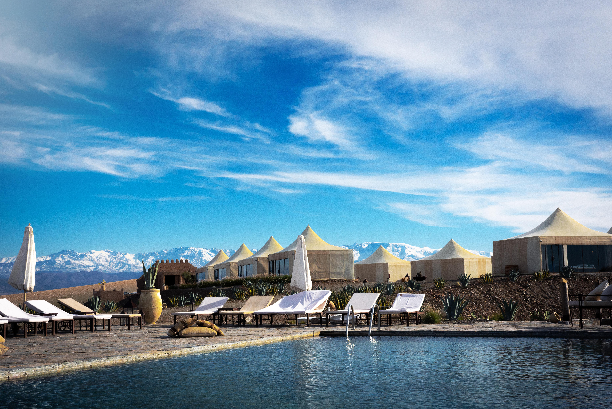
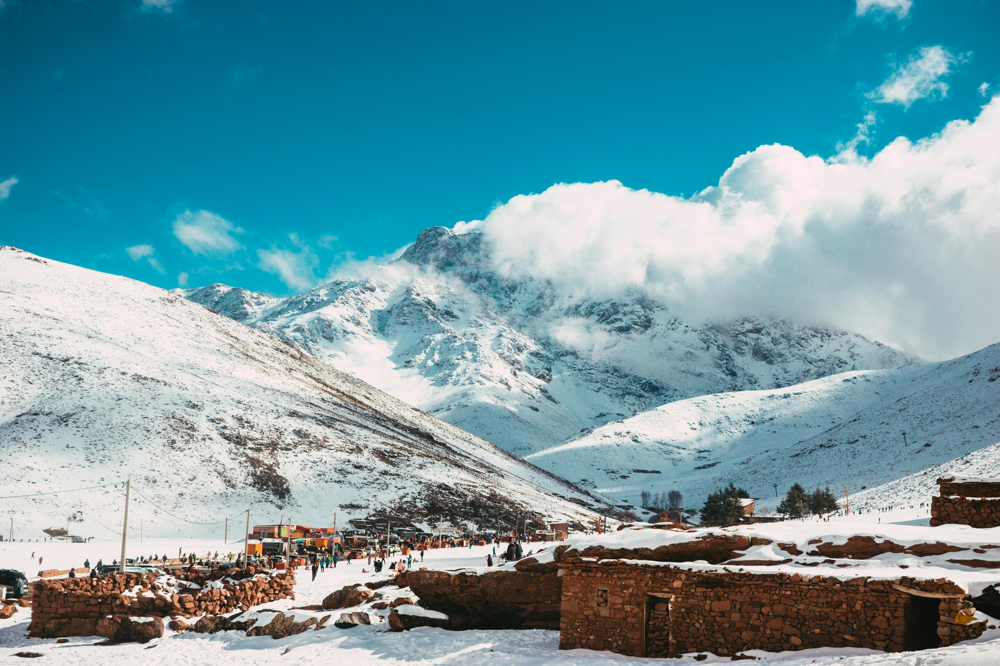
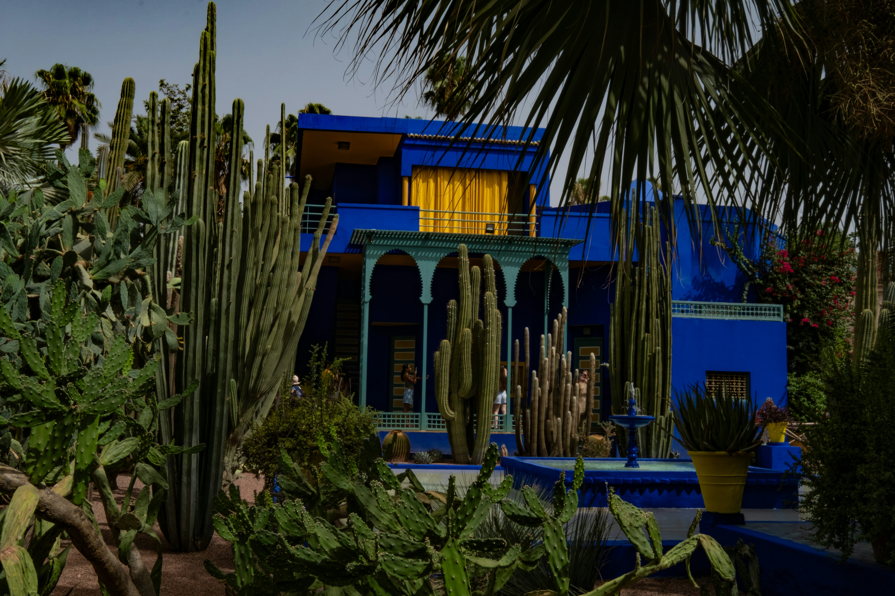

Plongez dans l'histoire de la cité impériale. Votre aventure commence par la découverte de la célèbre place Jemaa el-Fna et des ruelles colorées des souks. En fin de journée, profitez d'un moment de sérénité dans les jardins de la Ménara au coucher du soleil.

À seulement quelques kilomètres de la ville, évadez-vous dans le désert d'Agafay. Entre dunes de pierre et horizons infinis, profitez d'une balade à dos de chameau suivie d'un thé à la menthe traditionnel sous une tente berbère, face aux montagnes de l'Atlas.

Prenez de la hauteur pour une journée d'aventure. Accompagné d'un guide de haute montagne, parcourez les sentiers du Parc National du Toubkal. Entre villages berbères suspendus et air pur des sommets, cette randonnée vous offre les plus beaux panoramas du Haut Atlas

Terminez votre séjour par une note de poésie. Visitez le célèbre Jardin Majorelle et son bleu iconique, avant de vous offrir un moment de relaxation absolue dans un hammam traditionnel. Une dernière balade en calèche vous permettra de dire adieu aux remparts de la ville.
| Option de Séjour | Hébergement (Hôtels 4★) | Inclus | Prix / Pers. |
|---|---|---|---|
| Pack Évasion | Riad de Charme (3★/4★) | Transferts + Petit-déjeuner | 5 900 MAD |
| Pack Signature | Riad de Luxe (Médina) | Demi-pension + Guide Privé + Rando | 8 500 MAD |
| Pack Excellence | Palais & Resorts 5★ | Pension Complète + Chauffeur + Spa VIP | 15 200 MAD |